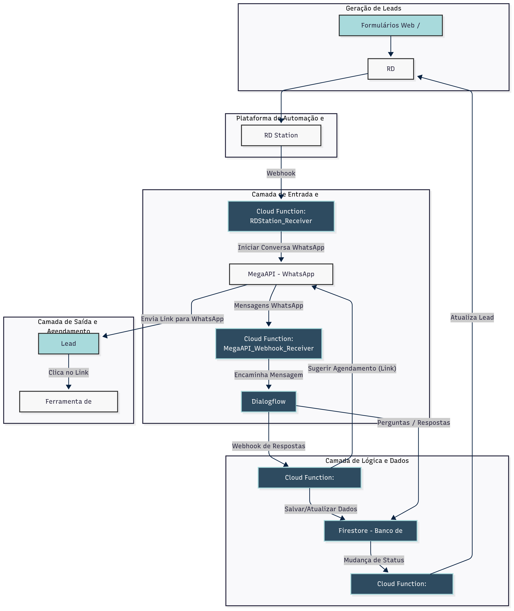

Estrutura da POC para Qualificação Automatizada de Leads com GCP e MegaAPI
Esta Prova de Conceito (POC) visa validar a viabilidade técnica e a eficácia de um fluxo automatizado de qualificação de leads, utilizando um agente conversacional no WhatsApp (integrado via MegaAPI) no GCP, para coletar informações, qualificar leads com base em ICP/Personas e sugerir agendamento de reuniões, minimizando o esforço manual e aumentando a assertividade no funil de vendas.
1. Objetivo da POC
Validar a viabilidade técnica e a eficácia de um fluxo automatizado de qualificação de leads, utilizando um agente conversacional no WhatsApp (integrado via MegaAPI) no GCP, para coletar informações, qualificar leads com base em ICP/Personas e sugerir agendamento de reuniões, minimizando o esforço manual.
2. Componentes GCP e Soluções Propostas
Agente Conversacional (Chatbot)
Dialogflow CX: Para construir o agente conversacional robusto e complexo. Ideal para conversas longas e com múltiplos tópicos, gerenciando fluxos, estados e transições de forma visual e intuitiva.
Integração WhatsApp
MegaAPI: Gateway para o WhatsApp Business API. Dialogflow CX enviará e receberá mensagens através da MegaAPI.
Cloud Functions (ou Cloud Run): Atuam como um webhook entre a MegaAPI e o Dialogflow CX, encaminhando mensagens.
Armazenamento e Processamento de Dados
Firestore (NoSQL Database): Para armazenar interações, respostas do lead, status de qualificação e score do lead. Flexível e escalável para dados semi-estruturados.
Lógica de Qualificação e Pontuação
Cloud Functions (ou Cloud Run): Funções serverless acionadas pelo Dialogflow CX ou Firestore para processar respostas, aplicar lógica de pontuação (ICP, Personas, BANT) e atualizar score/status.
Integração com CRM (RD Station)
Cloud Functions (ou Cloud Run): Orquestram a comunicação entre GCP e RD Station, enviando webhooks ou usando APIs para criar/atualizar leads com informações e score.
Enriquecimento de Dados (Opcional na POC)
Considerar uso de APIs de terceiros para enriquecimento de dados de CNPJ (faturamento, setor) dentro de uma Cloud Function.
Agendamento de Reuniões
Ferramenta de Agendamento (ex: Calendly): Dialogflow CX pode fornecer um link de agendamento ou interagir com API via Cloud Function para leads qualificados.
Diagrama de Arquitetura
**Espaço para o Diagrama de Arquitetura da Solução**
Imagem do diagrama de arquitetura que ilustra o fluxo de dados e a interação entre RD Station, MegaAPI, Dialogflow CX, Cloud Functions, Firestore e CRM. 
3. Fluxo da POC
- **Lead Capture:** Lead preenche formulário (site/landing page), dados básicos (nome, telefone, empresa) enviados ao RD Station.
- **RD Station Trigger:** Automação no RD Station envia webhook para Cloud Function no GCP.
- **Início da Conversa WhatsApp:** Cloud Function formata e envia mensagem inicial via MegaAPI para WhatsApp do lead.
- **Interação do Chatbot (Dialogflow CX):** MegaAPI envia resposta do lead para Cloud Function, que encaminha para Dialogflow CX. Dialogflow conduz a conversa com perguntas de qualificação, armazenando respostas no Firestore.
- **Lógica de Qualificação e Pontuação:** Cloud Function processa respostas, aplica lógica ICP/Personas/BANT e atualiza score/status no Firestore.
- **Sugestão de Agendamento (para MQLs):** Se MQL, Dialogflow CX (ou Cloud Function) envia mensagem via MegaAPI com link para agendamento.
- **Atualização do CRM:** Cloud Function é acionada por mudança no Firestore e atualiza o registro do lead no RD Station (ou CRM) com score e status.
4. Passos para a Implementação da POC
- **Configuração do Ambiente GCP:** Criar projeto, habilitar APIs, configurar IAM.
- **Configuração da MegaAPI:** Obter credenciais e configurar webhook.
- **Desenvolvimento do Dialogflow CX:** Criar agente, fluxos, intents, parâmetros e webhooks.
- **Desenvolvimento das Cloud Functions:** Funções para receive webhook (RD Station/MegaAPI), encaminhar para Dialogflow, processar lógica de qualificação, e integrar com CRM.
- **Configuração do Firestore:** Estruturar coleções e documentos para dados do lead e chat.
- **Integração RD Station:** Configurar webhook de saída no RD Station.
- **Testes:** Realizar testes de ponta a ponta, validar fluxo e precisão.
5. Métricas de Sucesso da POC
- % de Leads que Completam o Questionário no WhatsApp.
- % de Leads Qualificados Automaticamente (MQLs).
- Tempo Médio de Qualificação por Lead.
- Precisão da Qualificação (avaliação manual de amostra).
- Número de Agendamentos de Reuniões gerados pela automação.
Plano Faseado de Implantação do MVP
Qualificação Automatizada de Leads DHuO API Plus
**Objetivo Geral do MVP:** Validar o fluxo de qualificação automatizada de leads via WhatsApp, aplicando critérios de ICP/Persona/BANT e sugerindo agendamento de reuniões, com foco em um volume controlado de leads para aprendizado e otimização.
Fase 1: Preparação e Configuração Essencial (1-2 semanas)
**Objetivo:** Estabelecer a infraestrutura básica e as integrações fundamentais para o funcionamento do MVP.
- **Configuração do Ambiente GCP:** Criação do Projeto GCP e habilitação das APIs necessárias.
- **Configuração da MegaAPI:** Obtenção e configuração das credenciais e tokens.
- **Estrutura Inicial do Firestore:** Criação das coleções e esquema básico para dados de leads e interações.
- **Desenvolvimento das Cloud Functions Essenciais:** `rdstation_webhook_receiver` e `megaapi_webhook_receiver`.
- **Configuração Inicial do RD Station:** Automação para enviar webhook ao GCP.
- **Definição dos Critérios de ICP/Persona/BANT para o MVP:** Simplificação e priorização das perguntas do `Qualificação_DHuO_API.docx`.
Fase 2: Construção do Chatbot e Lógica de Qualificação (3-4 semanas)
**Objetivo:** Desenvolver o agente conversacional no Dialogflow CX e implementar a lógica central de qualificação.
- **Desenvolvimento do Agente Dialogflow CX:** Criação de fluxos, intents e parâmetros para o questionário de qualificação.
- **Desenvolvimento da Cloud Function de Lógica de Qualificação (`lead_qualifier_function`):** Implementação da pontuação ICP/Persona/BANT e atualização de status no Firestore.
- **Integração Dialogflow CX <=> Cloud Functions:** Configuração de webhooks para comunicação bidirecional.
- **Implementação do Agendamento de Reuniões:** Envio de link de agendamento via WhatsApp para MQLs.
Fase 3: Testes, Ajustes e Rollout Controlado (2-3 semanas)
**Objetivo:** Validar a funcionalidade completa do MVP, coletar feedback e lançar para um grupo limitado de leads.
- **Testes de Ponta a Ponta:** Simulação completa do fluxo do lead.
- **Refinamento do Chatbot:** Ajustes na clareza das perguntas e interpretação de respostas.
- **Otimização da Lógica de Qualificação:** Ajustes nos pesos e regras de pontuação.
- **Configuração da Atualização do CRM:** Desenvolver e testar Cloud Function para atualizar RD Station (ou CRM).
- **Treinamento da Samara e Equipe de Vendas (MVP):** Apresentação do novo fluxo e acesso às informações.
- **Lançamento Controlado do MVP:** Ativação para um volume limitado de leads.
Fase 4: Monitoramento e Otimização Contínua (Contínuo)
**Objetivo:** Acompanhar o desempenho do MVP, coletar feedback do mundo real e implementar melhorias incrementais.
- **Monitoramento de KPIs:** Acompanhamento diário/semanal das métricas definidas.
- **Coleta de Feedback:** Reuniões regulares com a equipe de vendas.
- **Otimização Iterativa:** Ajustes na lógica de pontuação e chatbot.
- **Escalabilidade e Produção:** Planejamento de expansão futura.